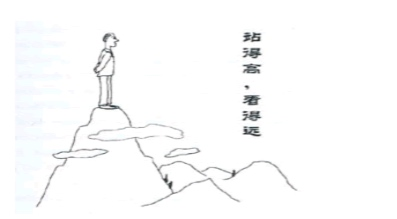
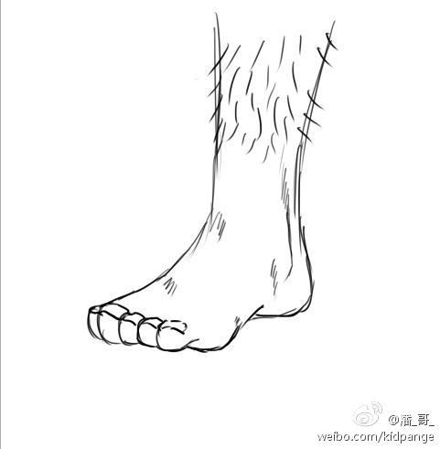
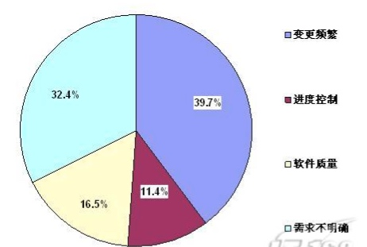
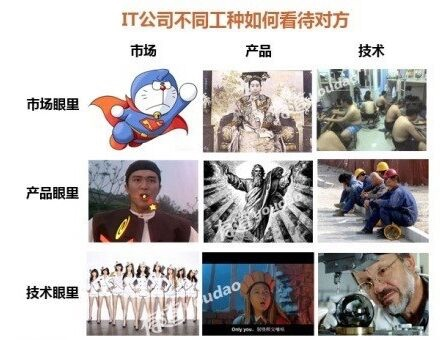

上篇文章里面我们有说到”产品经理”这个职位是做干什么的，这一篇文章，我们就要说一下产品经理最重要的一些品质。
个人觉得，一个好的产品一定需要有如下几点品质：
广阔的视野
古人有句话说得好，叫做:”站的高，看的远”。

我一直都觉得，一个人视野的广度，最终会决定一个人的高度。
比如说：习大大为什么能成为大家的大大，可不光是他的大大比我们的大大利害哟！

当然，这种层次的视野是我们这些市井小民通过正常的努力而无法获得的，就没有什么讨论的意义了。
但是呢，鸡汤老师说过

“改变自己所能改变的,接受自己无法改变的，并有足够的智慧来分辨两者的不同”
当时笔者我上大学的时候，曾经深爱着鸡汤老师，听了这句话以后，我的第一反映是：
然后吃吃喝喝睡了几天以后突然想到：

我还是不知道怎么做啊！！！

原谅我的反射弧比较长……
阅读
其实，关于如何提升自己的视野，我是到后来才明白的，那就是阅读：

为什么要读书？我曾经在我的博客里装逼的写到：
人作为一个动物,视野和了解的东西终究有限,因为一个人对待事物的看法难免主观,所谓唯有源头活水来,如果一个人的思维没有新鲜血液,是
无法成功的达到一个良好的自我循环的。读书的意义，大概就是告诉你这个世界里面各种各样的问题，以及这各种各样问题的各种各样不同答案，仅此而已。

所以，要读书啊！当然，作为一个资深的装逼犯，我要告诉所有人的是：永远不要在当当网上买书

认识牛人
有句话叫做：”大牛一句话,年薪十万加。大牛走一走,跑车立马有。”大牛丰富的经验和思考能力对于年轻人的个人成长的作用不言而喻！
所以……有机会一定要请我吃饭！

算了我还是不拿我自己举例了
如何认识牛人呢?我的观点是：首先呢，你得对别人有价值。
好像这点本身就很难做到,尤其是对于我们这种低level的人来说。大牛可都是这样的啊：
我的看法是，如果我们问别人之前，思考过这样一个问题“这件事情我想明白了么？我做过哪些尝试了呢？”然后再去问别人，别人一般都会这样：

当然，如何认识其它更多的牛人，以后我再写一篇文章单独说一下。
逻辑思维能力
我们扩展视野以后，就要开始行动，准备干活了，而在干活的过程中，我们需要有严密的思维来帮助自己完成这样的任务。
重要程度？自己体会一下先！
把握需求
产品经理在开发的过程中一刻不停的改需求是一件让所有RD们痛心疾首的事情,有统计数据表明……

如果一个产品弄不清楚需求的话,会害死兄弟们的。
如果一个产品总是不停改需求的话,会害死兄弟们的。
如果一个产品连自己要弄什么都不清楚的话,会害死兄弟们的。 坑人的结果是,RD哥哥也会发飙的!!!!!!!!

自证
那么当你有了一个想法之后，你怎么去不找研发大哥们去写代码就去证明自己是对的呢？当你有了一个想法，如何说服老板才会让老板觉得你不是在忽悠他呢？

这个时候自证就变的非常重要了，做事之前一定要先论证这件事情究竟可行与否,再来进行下一步的工作。如果一个人的逻辑不清晰，思维混乱，会给团队带来很大的灾难，一个团队里面，最可怕的就是下面的情境了。

那么，如何去获得这些难得的品质呢？如何去不断的迭代提升自己的能力呢？下篇文章我们接着聊。
参考
暂无
修订
暂无
其它
欢迎扫描二维码订阅我的微信公众号